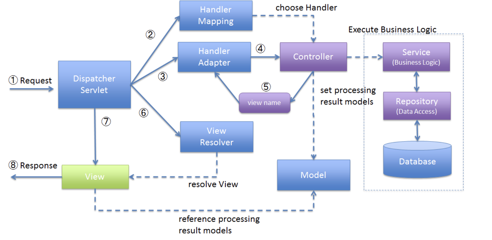

4. チュートリアル11.2：RESTでのTODOアプリケーション¶
4.1. REST API(REpresentational State Transfer)¶
Webシステムの設計思想であり、RESTであるための原則は4つ
統一インターフェース
情報のやり取りについてあらかじめ定義されていること 「GET／POST／DELETE／PUT」などのHTTPリクエストを利用することやJSON形式であることなどを決めている。アドレス可能性
全ての情報がURIを持つこと接続性
各エンドポイント間で接続できることステートレス性
やり取りが一回ずつで完結すること
4.2. チュートリアルでやりたいこと¶
全件取得・一件取得・削除・完了状態などをRESTで設定できるようにする。
GET api/v1/todos：全件取得
GET api/v1/todos/{id}:一件取得
POST api/v1/todos:新規作成
Put api/v1/todos/{id}:完了状態
DELETE api/v1/todos/{id}:削除
エラーメッセージもHTTPのレスポンスで返すようにする。エラーコードをキーとしてプロパティファイルから取得
4.3. 実装¶
4.3.1. DispatcherServletの設定¶
DispatherServletは、フロントでリクエストを受け取って裏側のjavaたちに処理を流していく。

4.3.1.1. web.xmlの修正¶
src/main/webapp/WEB-INF/web.xmlに設定を追加する
REST用のMVC設定ファイルをMETA-INF/spring/spring-mvc-rest.xmlに書き込むことを指定する。
DispatcherServletにマッピングするURLを指定する。今回は/api/v1/*へのURLはDispathcerServletにマッピングする。
<servlet>
<servlet-name>restApiServlet</servlet-name>
<servlet-class>org.springframework.web.servlet.DispatcherServlet</servlet-class>
<init-param>
<param-name>contextConfigLocation</param-name>
<!-- ApplicationContext for Spring MVC (REST) -->
<param-value>classpath*:META-INF/spring/spring-mvc-rest.xml</param-value>
</init-param>
<load-on-startup>1</load-on-startup>
</servlet>
<servlet-mapping>
<servlet-name>restApiServlet</servlet-name>
<url-pattern>/api/v1/*</url-pattern>
</servlet-mapping>
4.3.1.2. rest用の設定ファイルの作成¶
META-INF/spring/spring-mvc-rest.xmlを作成
component-scanの対象などを指定する。com.example.todo.api配下を指定して、apiの開発はこちらで実施する。
4.3.2. REST APIのパッケージ作成¶
com.example.todo.api.todoというパッケージを作成する。
api.todoパッケージの配下として作成するクラスは以下
[NAME]Resource
[NAME]RestController
[NAME]Helper(必要なら)
4.3.3. TodoResourceの実装¶
src/main/java/com/example/todo/api/todo/TodoResource.javaを作成する
Domain層で作成したcom.example.todo.domain.modelのTodo.javaと同様の指定に見えるが、TodoResoueceではクライアントとのやり取りの中で扱う情報が定義されている。
Todo.javaで定義するのは、業務処理の中で扱うデータであるので、ここは明確に分ける。
4.3.4. TodoRestControllerの実装¶
src/main/java/com/example/todo/api/todo/TodoRestController.javaを作成する
この中で、各RESTの処理を記述していく